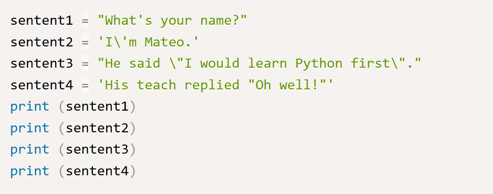
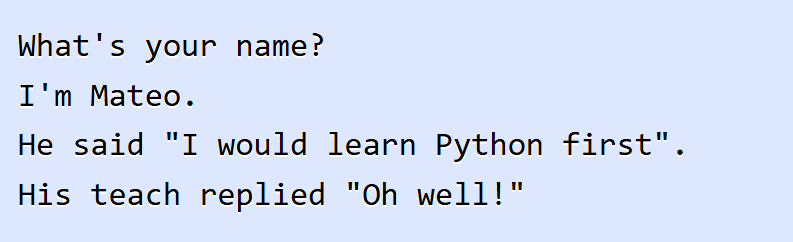
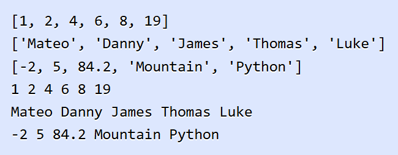
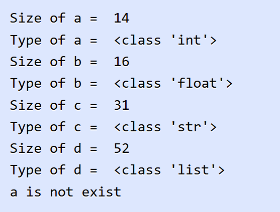

ในบทนี้ คุณจะได้เรียนรู้เกี่ยวกับตัวแปรและประข้อมูลในภาษา Python เราจะพูดถึงการประกาศตัวแปร และการนำตัวแปรไปใช้งานในโปรแกรม และเราจะอธิบายถึงข้อมูลประเภทต่างๆ ที่เป็นประเภทข้อมูลพื้นฐาน (Primitive data type) ในภาษา Python และรวมทั้งฟังก์ชันสำหรับการใช้งานกับตัวแปร
ตัวแปร (Variable) คือชื่อหรือเครื่องหมายที่กำหนดขึ้นสำหรับใช้อ้างถึงค่าที่เก็บในหน่วยความจำ ตัวแปรจะมีชื่อ (Identifier) สำหรับใช้ในการอ้างถึงข้อมูลของมัน ในการเขียนโปรแกรม ค่าของตัวแปรสามารถที่จะกำหนดได้ใน run-time หรือเปลี่ยนแปลงอยู่ตลอดเวลาในขณะที่โปรแกรมทำงาน (Executing) ในการเขียนโปรแกรมคอมพิวเตอร์นั้น ตัวแปรจะแตกต่างจากตัวแปรในทางคณิตศาสตร์ ค่าของตัวแปรนั้นไม่จำเป็นต้องประกอบไปด้วยสูตรหรือสมการที่สมบูรณ์เหมือนกับในคณิตศาสตร์ ในคอมพิวเตอร์ ตัวแปรนั้นอาจจะมีการทำงานซ้ำๆ เช่น การกำหนดค่าในที่หนึ่ง และนำไปใช้อีกที่หนึ่งในโปรแกรม และนอกจากนี้ยังสามารถกำหนดค่าใหม่ให้กับตัวแปรได้ตลอดเวลา ต่อไปเป็นตัวอย่างของการประกาศตัวแปรในภาษา Python
ในตัวอย่าง เราได้ทำการประกาศ 3 ตัวแปร ในการประกาศตัวแปรในภาษา Python คุณไม่จำเป็นต้องระบุประเภทของตัวแปรในตอนที่ประกาศเหมือนในภาษา C ในตัวแปร a มีค่าเป็น 3 และมีประเภทเป็น Integer ตัวแปร b มีค่าเป็น 4.92 และมีประเภทเป็น Float และตัวแปร c มีค่าเป็น "marcuscode.com" และเป็นประเภท String ภายหลังเราได้เปลี่ยนค่าของตัวแปร c เป็น 10.5 และตัวแปรกลายเป็นประเภท Float แทน
ต่อไปจะเป็นการพูดถึงประเภทข้อมูลชนิดต่างๆ ที่ภาษา Python สนับสนุน ซึ่งจะมีอยู่สามประเภทใหญ่ๆ คือ ข้อมูลแบบตัวเลข นั้นจะแบ่งย่อยออกเป็น Integer และ Float ข้อมูลประเภท String และข้อมูลแบบลำดับ เช่น List และ Tuple ประเภทข้อมูลทั้งหมดนี้เป็น Built-in type ในภาษา Python
ในภาษา Python นั้นสนับสนุนข้อมูลแบบตัวเลข ซึ่งข้อมูลประเภทนี้จะแบ่งออกเป็น Integer Float Decimal และ Complex อย่างไรก็ตามเราจะเน้นย้ำใน Integer ซึ่งเป็นการเก็บข้อมูลแบบจำนวนเต็ม และ Float เป็นข้อมูลแบบจำนวนจริง สำหรับประเภทแบบ Decimal นั้นแตกต่างไปจาก Float คือสามารถเก็บความละเอียดของจุดทศนิยมได้มากกว่า นอกจากนี้ Python ยังสนับสนุนตัวเลขในรูปแบบ Complex ที่แสดงในแบบ a +bj ต่อไปเป็นตัวอย่างในการประกาศและใช้งานตัวแปรแบบตัวเลขในภาษา Python
สิ่งหนึ่งที่น่าสังเกตในการหารตัวเลขในภาษา Python การหารตัวเลขนั้นจะได้ค่าเป็น Float เสมอ ถึงแม้ตัวเลขทั้งสองจะเป็น Integer ก็ตาม เช่นในตัวแปร d ซึ่งแตกต่างจากภาษา C ที่เมื่อตัวเลขทั้งสองเป็นแบบ Integer จะได้ผลลัพธ์เป็น Integer
Strings เป็นประเภทข้อมูลที่สำคัญและใช้งานทั่วไปในการเขียนโปรแกรม ในภาษาเขียนโปรแกรมส่วนมากแล้วจะมีประเภทข้อมูลแบบ String และในภาษา Python เช่นกัน String เป็นลำดับของตัวอักษรหลายตัวเรียงต่อกัน ซึ่งในภาษา Python นั้น String จะอยู่ในเครื่องหมาย Double quote หรือ Single quote เท่านั้น นอกจากนี้ในภาษา Python ยังมีฟังก์ชันในการจัดการกับ String มากมาย ซึ่งเราจะพูดอีกครั้งในบทของ String ในบทนี้มาทำความรู้จักกับ String เบื้องต้นกันก่อน
ในตัวอย่าง เป็นการประกาศตัวแปรประเภท String สองตัวแปรแรกเป็นการประโดยการใช้ Double quote และสองตัวแปรต่อมาเป็นการใช้ Single quote ซึ่งคุณสามารถใช้แบบไหนก็ได้ แต่มีสิ่งที่แตกต่างกันเล็กน้อยคือเกี่ยวกับการกำหนดตัวอักษรพิเศษหรือเรียกว่า Escape character
ในตัวอย่าง เป็นสิ่งที่แตกต่างของการประกาศ String ทั้งสองแบบกับ Escape character ตัวอักษร ' และ " นั้นเป็น Escape character ดังนั้นในการใช้งานตัวอักษรเหล่านี้ เราจะต้องทำการใส่เครื่องหมาย \ ลงไปข้างหน้าเสมอ แต่ในภาษา Python เมื่อคุณใช้ Double quote ในการประกาศ String คุณไม่ต้องทำการ Escape character สำหรับ Single quote และในทางกลับกัน อย่างไรก็ตามเราจะพูดอีกครั้งในบทของ String
Lists เป็นประเภทข้อมูลที่เก็บข้อมูลแบบเป็นชุดและลำดับ กล่าวคือมันสามารถเก็บข้อมูลได้หลายค่าในตัวแปรเดียว และมี Index สำหรับเข้าถึงข้อมูล ในภาษา Python นั้น List จะเป็นเหมือนอาเรย์ในภาษา C มันสามารถเก็บข้อมูลได้หลายตัวและยังสามารถเป็นประเภทข้อมูลที่แตกต่างกันได้อีกด้วย มาดูการประกาศและใช้งาน List ในเบื้องต้น
ในตัวอย่าง เราได้ทำการประกาศ 3 Lists โดยตัวแปรแรกนั้นเป็น List ของตัวเลข และตัวแปรที่สองเป็น List ของ String และตัวแปรสุดท้ายเป็น List แบบรวมกันของประเภทข้อมูล เราใช้ฟังก์ชัน print() ในการแสดงผลข้อมูลใน List และใช้คำสั่ง For loop ในการอ่านค่าในลิสต์และนำมาแสดงผลเช่นกัน
ในภาษา Python นั้นมีฟังก์ชันที่สร้างมาเพื่อให้ใช้งานกับตัวแปร เช่น ฟังก์ชันสำหรับหาขนาดของตัวแปร ฟังก์ชันในการหาประเภทของตัวแปร ฟังก์ชันลบตัวแปรออกไปจากหน่วยความจำ และฟังก์ชันในการตรวจสอบว่าตัวแปรมีอยู่หรือไม่ ซึ่งในบางครั้งการเขียนโปรแกรมก็จำเป็นที่คุณอาจจะต้องมีการตรวจสอบสิ่งเหล่านี้ในขณะที่โปรแกรมทำงาน นี่เป็นตัวอย่างการใช้งาน
ในตัวอย่าง เราได้ประกาศตัวแปรประเภทต่างๆ เราได้ฟังก์ชัน getsizeof() สำหรับหาขนาดของตัวแปรที่มีหน่วยเป็น Byte และฟังก์ชัน type() สำหรับดูประเภทของตัวแปรว่าอยู่ในคลาสไหน ฟังก์ชัน del() สำหรับยกเลิกหรือลบการประกาศตัวแปรออกไปจากหน่วยความจำ และสุดท้ายเป็นการตรวจสอบว่าตัวแปรถูกประกาศแล้วหรือยังในฟังก์ชัน locals() สำหรับตรวจสอบตัวแปรในโมดูลปัจจุบัน หรือ globals() สำหรับตรวจสอบตัวแปรในโปรแกรมทั้งหมด
